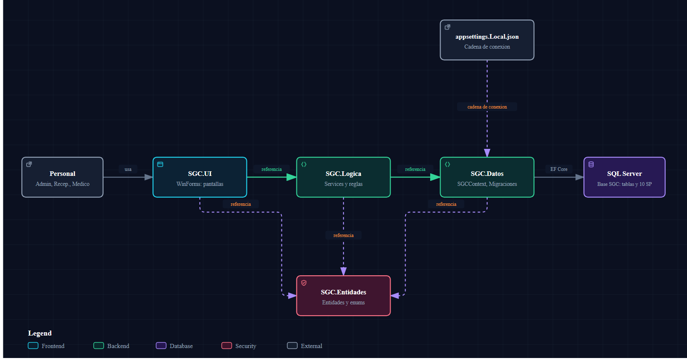
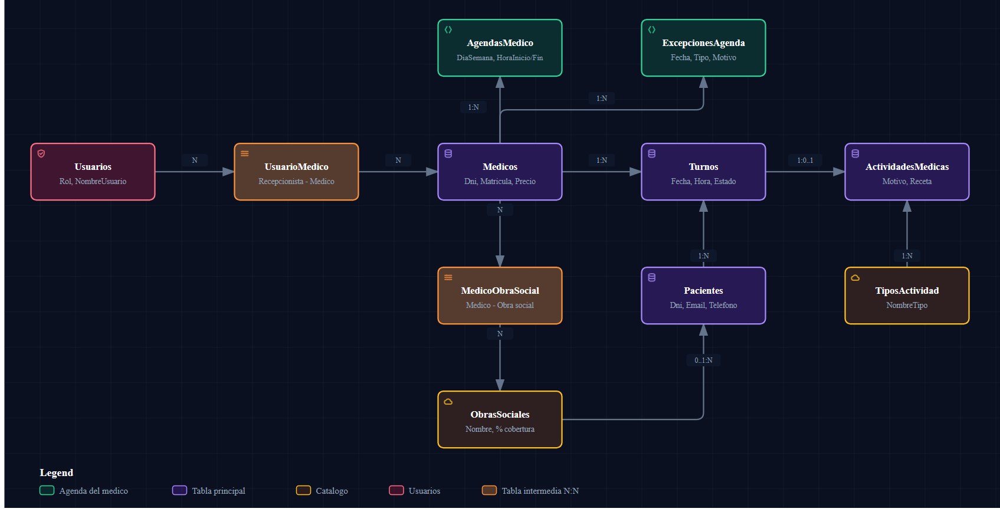

El presente documento constituye la Especificación de Requisitos de Software (ERS) formal para el Sistema de Gestión de Consultorio (SGC), elaborado bajo los lineamientos y estructura recomendada por el estándar internacional IEEE Std 830-1998. El documento tiene como propósito definir con exactitud el comportamiento funcional y técnico del software, sirviendo como contrato y referencia para la cátedra evaluadora (Ingeniería de Software I - FACENA-UNNE), el equipo de desarrollo y el cliente operativo del consultorio.
El sistema SGC es una solución de escritorio desarrollada sobre la plataforma .NET 8 (Windows Forms) con persistencia en Microsoft SQL Server mediante Entity Framework Core y Procedimientos Almacenados (Stored Procedures) nativos. Su objetivo principal es sistematizar integralmente las operaciones administrativas y de atención de un consultorio médico ambulatorio.
Procesos incluidos en el alcance:
| Término | Definición |
|---|---|
| SGC | Sistema de Gestión de Consultorio. |
| ERS | Especificación de Requisitos de Software (formato IEEE 830). |
| ABM | Alta, Baja y Modificación (CRUD) de entidades del sistema. |
| Baja Lógica | Inactivación de un registro mediante bandera booleana (Activo = 0), garantizando la integridad histórica de datos sin borrado físico. |
| Copago | Monto diferencial que abona el paciente en recepción cuando su cobertura médica no cubre el 100% de la consulta particular del médico. |
| Procedimiento Almacenado (SP) | Subrutina en lenguaje T-SQL compilada y almacenada en el motor SQL Server para ejecutar consultas analíticas y transacciones complejas con alto rendimiento. |
| GDI+ | Graphics Device Interface de Windows utilizado para renderizar gráficos analíticos nativos de alta definición sin librerías de terceros. |
| PBKDF2 | Password-Based Key Derivation Function 2, algoritmo criptográfico con sal y 100.000 iteraciones para almacenamiento seguro de credenciales. |
El SGC opera como un sistema autónomo basado en una arquitectura multicapa desacoplada y modular. La separación de responsabilidades garantiza la mantenibilidad, escalabilidad y facilidad de auditoría:
| Capa | Proyecto C# | Responsabilidad Primaria |
|---|---|---|
| Presentación | SGC.UI | Formularios Windows Forms, controles de usuario compartidos, estilos visuales (EstiloUi), validación inmediata de teclado y adaptación automática a DPI. |
| Lógica de Negocio | SGC.Logica | Servicios transaccionales (TurnoService, PacienteService, BackupService, etc.), reglas de aranceles, validaciones lógicas cruzadas y control de excepciones. |
| Acceso a Datos | SGC.Datos | Contexto de Entity Framework Core (SGCContext), migraciones estructuradas, configuración de restricciones CHECK a nivel motor y ejecución de Stored Procedures. |
| Entidades del Dominio | SGC.Entidades | Modelos de datos puros (POCO), enumeraciones (RolUsuario, EstadoTurno) y DTOs de reportes. Totalmente independiente de dependencias externas. |

| Rol de Usuario | Perfil y Responsabilidad | Alcance Operativo |
|---|---|---|
| Administrador | Personal de gestión o directivo del consultorio. Familiaridad con configuraciones de software y gestión técnica. | Acceso integral a entidades maestras (médicos, obras sociales, usuarios, agendas semanales, licencias), diagnóstico del sistema, copias de seguridad (Backup/Restore) y reportes globales de recaudación. |
| Recepcionista | Personal de front-desk y atención al público. Experiencia en manejo de agenda y atención de pacientes. | Gestión de pacientes, asignación y reprogramación de turnos, confirmación de asistencia, registro de cobro/copago en recepción y reportes de volumen de turnos y obras sociales de sus médicos asignados. |
| Médico | Profesional de la salud matriculado. Enfoque exclusivo en la atención sanitaria. | Visualización de su agenda diaria de consultas, registro de actividad clínica por turno (diagnóstico y receta), consulta del historial confidencial de pacientes y estadísticas de su propio rendimiento ambulatorio. |
es-AR) y fechas estándar dd/MM/yyyy.Interfaz de Usuario: Ventana principal contenedor MDI/Panel donde las pantallas hijas se embeben dinámicamente con tamaño adaptativo, garantizando que no existan ventanas flotantes dispersas. Panel lateral interactivo con resaltado de sección activa y adaptación visual para monitores estándar y pantallas de alta densidad DPI (125% y 150%).
Interfaz de Software: Conector nativo Microsoft.Data.SqlClient y Microsoft.EntityFrameworkCore.SqlServer contra motor SQL Server local o remoto.
| ID | Requisito Funcional | Rol | Descripción Detallada |
|---|---|---|---|
| RF#01 | Asignar Turno | Recep | El sistema debe permitir seleccionar médico, fecha, horario disponible calculado, duración (30 min por defecto) y paciente. El turno nace en estado Confirmado. |
| RF#02 | Validación de Asignación | Recep | El sistema debe rechazar turnos en fechas/horas pasadas, fuera de la franja horaria activa del médico, dentro de un período de ausencia médica o si colisiona con otro turno confirmado del mismo médico o del mismo paciente. |
| RF#03 | Cálculo de Horarios Libres | Recep | El sistema debe calcular y renderizar visualmente los bloques horarios disponibles para el médico en la fecha elegida, identificando con claridad si no hay atención por falta de agenda o por ausencia programada. |
| RF#04 | Reprogramación de Turnos | Recep | Permite cambiar fecha, hora y duración de un turno confirmado sin alterar al paciente ni al médico, revalidando disponibilidad y superposiciones. |
| RF#05 | Cancelación de Turnos | Recep | Permite cancelar un turno con confirmación del operador, cambiando su estado a Cancelado e inactivando el registro para liberar el horario. |
| RF#06 | Confirmación de Asistencia | Recep | Permite registrar el ingreso del paciente a la sala de espera en el día de la fecha. Si el paciente se presentó pasa a estado Asistió; si faltó, pasa a Ausente. |
| RF#07 | Cálculo y Cobro de Copago | Recep | Si el paciente asiste, el sistema sugiere automáticamente el arancel a cobrar: arancel particular si no posee cobertura o si el médico no atiende su obra social; o el arancel con descuento si la obra social tiene convenio activo. |
| RF#08 | Notificación al Paciente | Recep | Al registrar, reprogramar o cancelar un turno, el sistema genera el aviso correspondiente en el centro de notificaciones para el paciente. |
| ID | Requisito Funcional | Rol | Descripción Detallada |
|---|---|---|---|
| RF#09 | Alta y Edición de Pacientes | Recep | Registro de nombre, apellido, DNI, fecha de nacimiento, teléfono, correo electrónico y obra social afiliada. |
| RF#10 | Validación de Datos de Paciente | Recep | Validación de DNI numérico (7 a 8 dígitos), unicidad de documento entre pacientes activos, formato de correo con '@' y '.' y edad razonable (≤ 120 años). |
| RF#11 | Baja Lógica de Pacientes | Recep | Inactivación del paciente impidiendo nuevas asignaciones, pero preservando turnos históricos y atenciones clínicas previas. Bloquea la baja si tiene turnos futuros confirmados. |
| RF#12 | Búsqueda y Métrica de Paciente | Recep | Búsqueda en tiempo real por DNI, apellido o nombre, visualizando fecha de última visita, próximo turno agendado y contador de inasistencias. |
| ID | Requisito Funcional | Rol | Descripción Detallada |
|---|---|---|---|
| RF#13 | ABM de Médicos | Admin | Registro de médicos con nombre, apellido, DNI, matrícula profesional única, especialidad y valor monetario de consulta particular. |
| RF#14 | Convenio Médico - Obras Sociales | Admin | Asignación de las obras sociales aceptadas por cada profesional mediante relación muchos a muchos. |
| RF#15 | ABM de Obras Sociales | Admin | Registro de prestatarias con nombre único y porcentaje de cobertura pactado (entre 0% y 100%). |
| RF#16 | Configuración de Agenda Semanal | Admin | Definición de franjas horarias por día de la semana (Lunes a Domingo) con horario de inicio y fin, impidiendo solapamientos. |
| RF#17 | Carga de Ausencias / Licencias | Admin | Registro de novedades (día completo o rango de horas) por vacaciones, congresos o enfermedad. |
| RF#18 | Cancelación Atómica por Ausencia | Admin | Al registrar una ausencia médica, el sistema cancela en una única transacción los turnos comprometidos y emite los avisos respectivos. |
| ID | Requisito Funcional | Rol | Descripción Detallada |
|---|---|---|---|
| RF#19 | Agenda del Médico del Día | Médico | Visualización exclusiva de los turnos asignados al profesional logueado con tarjetas de estado (Total, Atendidos, En Espera, Cancelados). |
| RF#20 | Registro de Actividad Clínica | Médico | Carga de evolución médica sobre un turno asistido: tipo de práctica (catálogo), motivo de consulta obligatorio, procedimiento diagnóstico y receta médica. |
| RF#21 | Modificación y Baja de Atención | Médico | Permite rectificar la evolución o aplicar baja lógica; al eliminarse, el turno vuelve a figurar como pendiente de atención. |
| RF#22 | Consulta de Historia Clínica | Médico | Explorador cronológico confidencial de evoluciones de un paciente seleccionado con filtros por rango de fechas y tipo de actividad. |
| ID | Requisito Funcional | Rol | Descripción Detallada |
|---|---|---|---|
| RF#23 | Autenticación y Control de Acceso | Todos | Inicio de sesión seguro; restricción estricta de formularios y vistas de datos según el rol del usuario autenticado. |
| RF#24 | Administración de Usuarios | Admin | Alta y modificación de operadores; vinculación obligatoria de médicos con su perfil y asignación de médicos a recepcionistas. Protección para no desactivar al último administrador. |
| RF#25 | Copias de Seguridad (Backup) | Admin | Generación de archivos de respaldo .BAK de la base de datos SQL Server desde la interfaz gráfica. |
| RF#26 | Restauración de Base de Datos | Admin | Restauración segura desde archivo .BAK con verificación previa de base de datos, confirmación y ejecución automática de migraciones. |
| RF#27 | Reportes Analíticos con Stored Procedures | Todos | Ejecución de 7 reportes en base a procedimientos almacenados: Turnos por Período, Recaudación, Asistencia, Ocupación de Agenda, Pacientes por Mes, Rendimiento Médico y Distribución por Obra Social. |
| RF#28 | Exportación de Datos a CSV | Todos | Descarga de datos tabulares calculados en formato CSV estándar compatible con Microsoft Excel con protección de caracteres de fórmula. |
| ID | Categoría | Descripción |
|---|---|---|
| RNF#01 | Usabilidad | Patrón visual estandarizado: formulario de captura con numeración a la izquierda, grilla de resultados con contadores arriba y franja de estado/mensajes en la parte inferior. |
| RNF#02 | Rendimiento | Las consultas habituales de turnos y agendas deben responder en menos de 1 segundo en entorno local. Los reportes analíticos complejos se ejecutan íntegramente en SQL Server mediante Stored Procedures. |
| RNF#03 | Seguridad / Confidencialidad | Los datos de evoluciones clínicas, diagnósticos y recetas solo son accesibles y visibles para usuarios con rol Médico. Ningún reporte administrativo expone información médica confidencial. |
| RNF#04 | Seguridad Criptográfica | Almacenamiento de contraseñas mediante algoritmo PBKDF2 con SHA-256 y 100.000 iteraciones. Nunca se almacenan ni visualizan claves en texto claro. |
| RNF#05 | Fiabilidad e Integridad | Persistencia atómica de transacciones y refuerzo de integridad relacional mediante claves foráneas y restricciones CHECK a nivel de motor de datos (CK_Medico_Precio, CK_Turno_Monto, etc.). |
| RNF#06 | Compatibilidad de Pantalla | Ajuste dinámico de tipografías y contenedores para escalas de visualización de Windows al 100%, 125% y 150% (High DPI). |
| ID | Regla de Negocio | Criterio Técnico Aplicado |
|---|---|---|
| RN#01 | Ciclo de Vida de Turno | Un turno nace exclusivamente en estado Confirmado. Al presentarse pasa a Asistió; ante inasistencia a Ausente; y si se cancela a Cancelado (con baja lógica). |
| RN#02 | Anti-Superposición Horaria | Dos turnos colisionan si: (Inicio_A < Fin_B) Y (Fin_A > Inicio_B). Turnos contiguos en el borde exacto no se consideran superpuestos. Aplica para el médico y para el paciente. |
| RN#03 | Cálculo de Copagos | Monto = PrecioParticular - (PrecioParticular × Cobertura / 100) si el médico acepta la obra social del paciente; de lo contrario se factura el 100% del precio particular. |
| RN#04 | Cancelación por Licencia | Al registrar una ausencia médica, los turnos confirmados afectados se cancelan de manera atómica con notificación al paciente. |
| RN#05 | Protección de Integridad | No se permite dar de baja a un médico o paciente que registre turnos confirmados futuros sin reprogramar o cancelar previamente. |
| RN#06 | Supervivencia del Administrador | El sistema rechaza cualquier intento de dar de baja lógica o despojar del rol de Administrador a la última cuenta administradora activa. |
Conforme a las pautas de la cátedra de Ingeniería del Software I (Lic. Laura Gómez Solís), se modelan los casos de uso principales describiendo actores, precondiciones, flujo típico, flujos alternativos y postcondiciones:
| Campo | Detalle |
|---|---|
| Actor Principal | Recepcionista |
| Precondición | Sesión iniciada. Médico con agenda activa y paciente registrado en el padrón. |
| Flujo Principal | 1. La recepcionista selecciona el médico asignado. 2. Selecciona la fecha en el calendario. 3. El sistema calcula y muestra los bloques de horarios disponibles. 4. Selecciona un horario y duración (30 min por defecto). 5. Selecciona el paciente a agendar. 6. Presiona «Asignar Turno». 7. El sistema valida reglas de negocio, guarda el turno como Confirmado y emite notificación. |
| Flujos Alternativos | 3a. Médico sin atención: El sistema indica ausencia programada o día sin franja y no lista horarios. 7a. Colisión o fecha pasada: El sistema advierte el conflicto y cancela la operación sin guardar. |
| Postcondición | Turno registrado en base de datos en estado Confirmado y horario ocupado en la agenda. |
| Campo | Detalle |
|---|---|
| Actor Principal | Recepcionista |
| Precondición | Existe un turno Confirmado para el día de la fecha o fecha anterior. |
| Flujo Principal | 1. Selecciona el turno en la lista y presiona «Confirmar Asistencia». 2. Marca opción «Asistió». 3. El sistema calcula automáticamente el arancel a cobrar según convenio de obra social. 4. Selecciona el medio de pago (Efectivo/Particular u Obra Social). 5. Presiona «Confirmar». 6. El turno pasa a estado Asistió y queda disponible para el médico en sala de espera. |
| Flujos Alternativos | 2a. Paciente Ausente: Marca «Ausente», no se solicita cobranza y el turno queda registrado como inasistencia. |
| Postcondición | Turno actualizado en estado Asistió con importe y medio de pago registrado. |
| Campo | Detalle |
|---|---|
| Actor Principal | Médico |
| Precondición | Médico autenticado en el sistema. El turno debe estar confirmado o con asistencia registrada. |
| Flujo Principal | 1. El médico abre su agenda diaria y presiona «Atender Paciente». 2. Selecciona el tipo de actividad clínica (Consulta, Control, Práctica, etc.). 3. Ingresa el motivo de consulta obligatorio. 4. Registra el diagnóstico/procedimiento y prescripciones farmacológicas. 5. Presiona «Guardar Atención». 6. El sistema vincula la actividad al turno y actualiza el estado clínico. |
| Postcondición | Evolución clínica persistida confidencialmente e incorporada al historial del paciente. |
| Campo | Detalle |
|---|---|
| Actor Principal | Administrador |
| Precondición | Sesión iniciada con credenciales de Administrador. Acceso a SQL Server. |
| Flujo Principal | 1. Ingresa a la sección «Copia de Seguridad». 2. Para crear: Selecciona carpeta de destino y presiona «Crear Copia de Seguridad (.BAK)». El sistema ejecuta el backup nativo. 3. Para restaurar: Selecciona archivo .BAK válido, el sistema verifica cabeceras de base de datos y solicita confirmación de seguridad. 4. Se bloquea la navegación, se restaura la base y se aplican migraciones pendientes. |
| Postcondición | Base de datos respaldada o restaurada a su estado operacional íntegro. |
El modelo relacional del SGC se encuentra normalizado en tercera forma normal (3FN) e implementado sobre SQL Server con Entity Framework Core. Las claves primarias utilizan identificadores enteros autonuméricos (Identity), resguardando unicidad lógica con índices únicos (DNI, Matrícula, Nombre de Usuario).

A diferencia de sistemas que procesan grandes volúmenes de datos en memoria cliente, el SGC traslada la lógica pesada de cálculo, agregación y reportería directamente al motor de base de datos mediante Stored Procedures nativos:
| Procedimiento Almacenado | Parámetros | Propósito y Optimización |
|---|---|---|
sp_ObtenerTurnosPorMedicoYFecha | @MedicoId, @Fecha, @IncluirCancelados | Recupera los turnos del médico optimizando el filtrado en el motor y materializando relaciones en C#. |
sp_AsignarTurno | @PacienteId, @MedicoId, @Fecha, @HoraInicio, @Duracion | Valida agenda, vigencia y solapamiento horario en una transacción atómica directa en SQL Server. |
sp_ReportePacientesPorMes | @Anio, @MedicoId | Agrupa atenciones mensuales con sumatorias condicionales (Atendidos, Ausentes, Cancelados) según el rol. |
sp_ReporteTurnosPorObraSocial | @Anio, @MedicoId | Calcula volumen de turnos y recaudación total por obra social con soporte de filtro médico. |
sp_ReporteRendimientoMedicos | @Anio, @Mes, @MedicoId | Genera matriz comparativa de desempeño profesional (turnos otorgados, tasa de atención y facturación). |
sp_ReporteAsistencia | @Desde, @Hasta, @MedicoId | Calcula porcentajes y totales de asistencia efectiva vs. ausentismo en un período. |
sp_ReporteOcupacionAgenda | @Desde, @Hasta, @MedicoId | Compara horas de turno ocupadas contra la capacidad máxima de la agenda médica semanal. |
sp_ResumenDelDia | @Fecha, @Rol, @UsuarioId, @MedicoId | Alimenta el panel de inicio en menos de 200ms con las métricas clave de cada usuario. |
| Estado | Significado | Transición y Responsable |
|---|---|---|
| Confirmado | Turno activo programado en agenda. | Estado inicial de creación (Recepcionista / RF#01). |
| Asistió | El paciente se presentó al consultorio y se registró el cobro. | Confirmación de asistencia en recepción (Recepcionista / RF#06). |
| Ausente | El paciente faltó a su cita programada. | Registro de inasistencia (Recepcionista / RF#06). |
| Cancelado | Turno cancelado por el paciente o por licencia médica. | Baja lógica del turno (Recepcionista o Administrador / RF#05, RF#18). |
| Módulo / Funcionalidad | Administrador | Recepcionista | Médico |
|---|---|---|---|
| Pantalla de Inicio y Resumen | Sí (Estado del Sistema) | Sí (Turnos de sus médicos) | Sí (Mi día y próximo paciente) |
| Padrón de Pacientes | No | Sí (Completo) | No |
| Gestión de Turnos y Cobros | No | Sí (Médicos asignados) | No |
| Médicos, Obras Sociales y Agendas | Sí (Completo) | No | No |
| Ausencias y Licencias Médicas | Sí (Completo) | No | No |
| Gestión de Usuarios y Roles | Sí (Completo) | No | No |
| Copia de Seguridad y Restauración | Sí (Completo) | No | No |
| Mi Agenda del Día | No | No | Sí (Propia) |
| Evolución Clínica y Recetas | No | No | Sí (Propia) |
| Historial Clínico del Paciente | No | No | Sí (Solo lectura) |
| Reportes y Estadísticas | Sí (7 Reportes) | Sí (3 Reportes) | Sí (4 Reportes) |